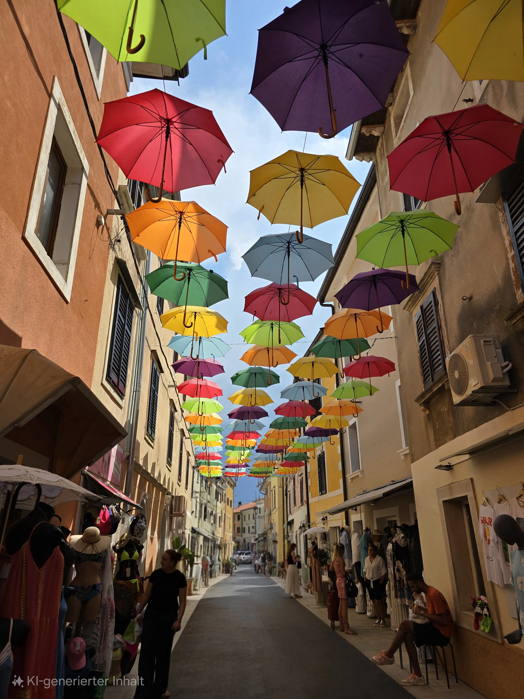
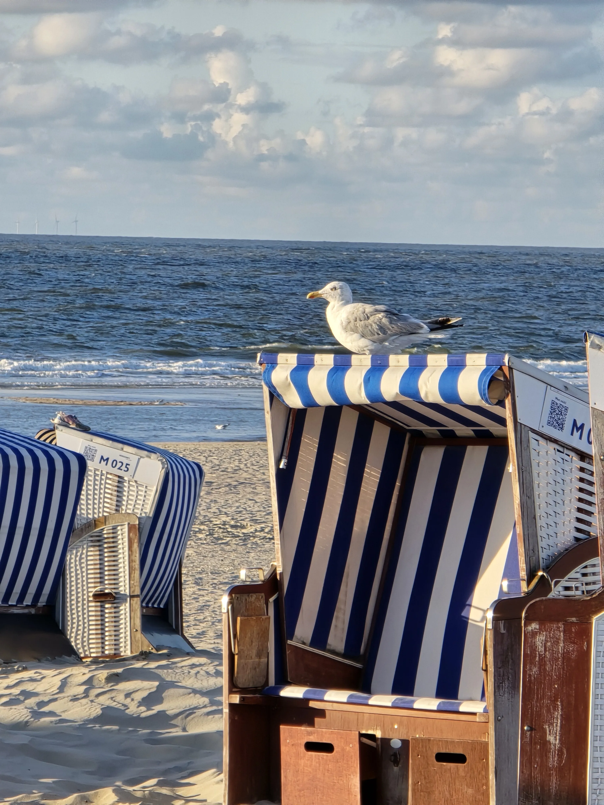
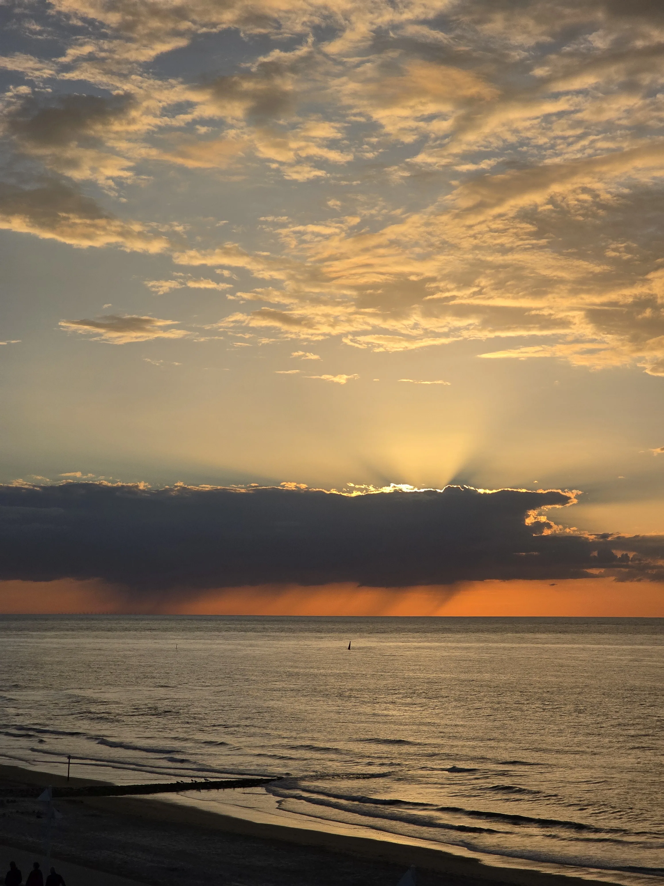

Willkommen zu meinen Reiseerfahrungen
Entdecken Sie meine Reiseabenteuer und Erfahrungen aus verschiedenen Ländern und Kulturen.
„Reisen ist die Sehnsucht nach dem Leben."
Kurt Tucholsky
Interaktive Karte
Reiseimpressionen



Kommende Reisen
| Land | Stadt | Zeitraum |
|---|---|---|
| Frankreich | Paris | - |
| Spanien | Valencia | - |
| Deutschland | Köln |